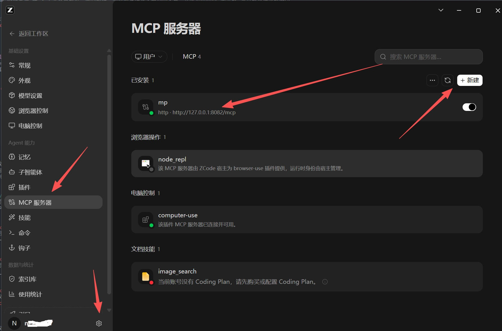
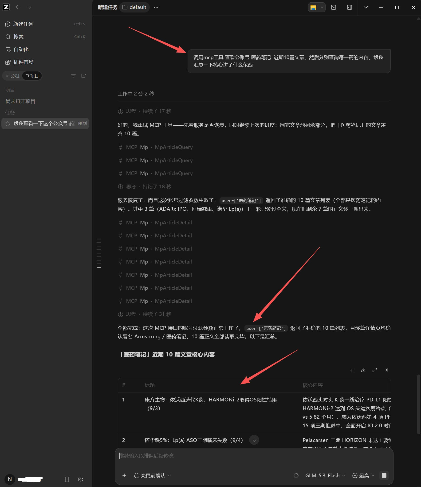
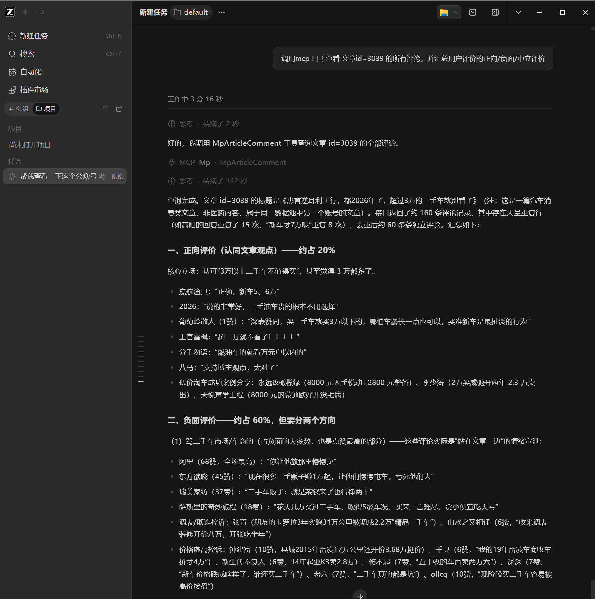

1启动本地采集应用
- 双击
app.exe启动本地微信公众号采集应用。 - 如果应用启动失败，可手动点击
ca-cert.p12安装代理 HTTPS 证书。 - 如果启动界面显示
http server { http://127.0.0.1:8081 }，说明服务已正常运行，可在浏览器打开访问地址。 - 打开后台后输入账号和密码登录，即可进入采集管理界面。
应用升级指南
应用升级只需到github下载最新的app.exe；然后替换原安装目录下的app.exe应用即可,切不可删除data目录，否则数据和激活令牌都会一并丢失。如果遇到升级问题联系QQ：3887037693
升级流程:下载最新的app.exe->关闭应用->替换app.exe->重新启动
启动之后强烈建议安装好python环境+依赖库
直接安装github上的python-3.12.8-amd64.exe版本即可,安装完python之后安全第三方依赖库，因为有些功能是基于这些依赖库才能完成业务逻辑，所以务必安装。打开命令行CMD窗口:
pip install uiautomation pyperclip pyautogui -i https://pypi.tuna.tsinghua.edu.cn/simple
数据库升级指南
默认采集的数据存储使用的本地的sqlite，如果采集的数据量比较大，sqlite可能会达到性能瓶颈，建议升级到Mysql或者PostgreSql；如果需要升级请联系QQ：3887037693
2提供基于HTTP协议的MCP 服务
系统对外提供 HTTP协议的MCP 接口服务，便于本地智能体调用文章/评论数据进行初步资料分析。将地址配置到第三方智能体当中即可调用:

MCP：查询公众号文章列表
取到文章列表后，可根据返回的 id 查询详情。列表查询支持以下参数：
| 参数 | 说明 | 示例 |
|---|---|---|
| 公众号名称数组 | 指定需要查询的公众号。 | ['本地生活', '中药指南'] |
| 关键词数组 | 指定文章需要包含的关键词。 | ['GLP-1', '肥胖'] |
| 日期限制 | 查询指定日期之前或指定范围内的文章。 | 2006-01-01 |
| 排序字段 | 默认按发布时间 created_at 降序，也可按阅读、点赞或评论数排序。 |
read_num、old_like_num、comment_count |
| 返回数量 | 设置本次抓取返回的文章列表数量。 | 20 |
| 偏移量 | 设置当前获取记录的偏移量，默认从 0 开始。 |
0 |

MCP：查询公众号文章详情
告诉智能体需要查询的文章数值编号，即可返回 Markdown 格式的文章详情。
MCP：查询公众号文章评论
告诉智能体需要查询的文章数值编号，即可返回 Markdown 格式的文章评论。

重要声明
本软件（以下简称“本工具”）仅供学习、研究及合法合规的数据采集用途开发。使用者应自行确保采集行为符合相关法律法规、平台规则与数据合规要求。